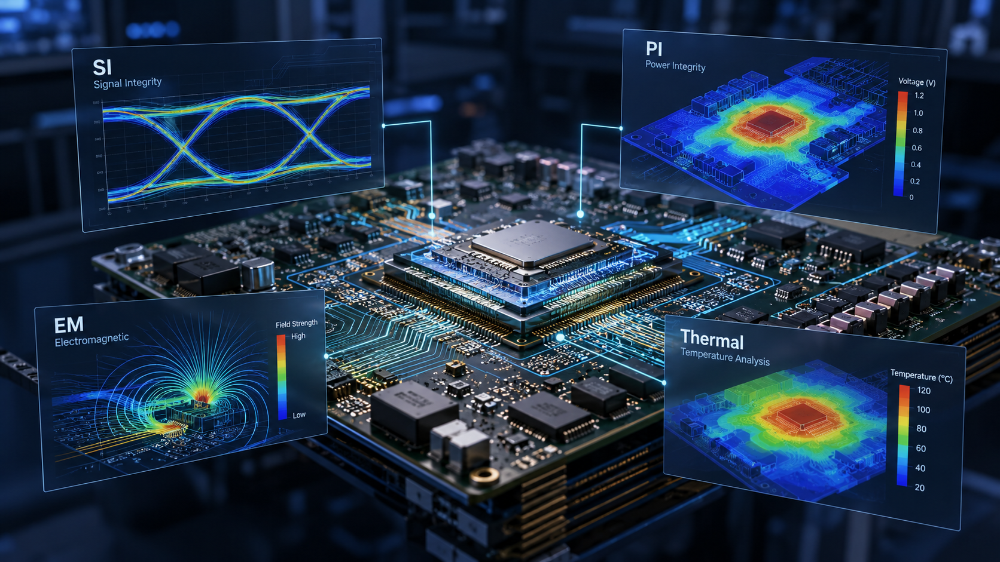
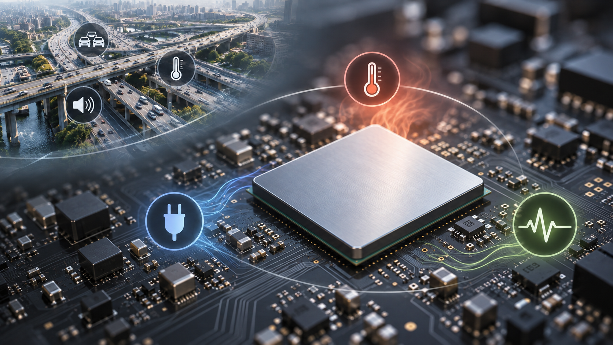
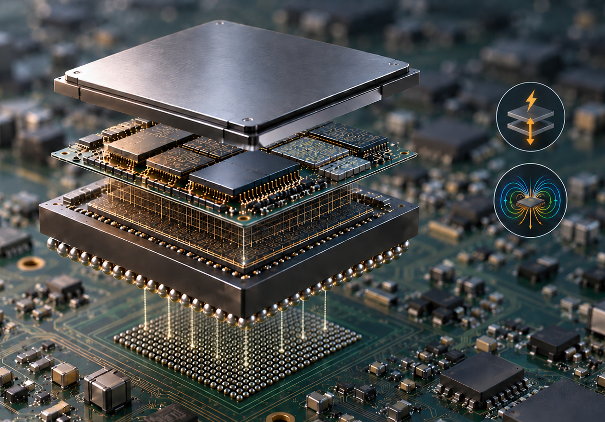

고성능 반도체와 AI 시스템의 발전으로 PCB를 설계하면서 다루어야 할 문제가 빠르게 늘어나고 있습니다.
과거에는 PCB 설계가 “회로를 제대로 연결하는 것”이었지만, 이제는 그것만으로 충분하지 않습니다. 신호가 원하는 품질로 전달되는지, 전원이 안정적으로 공급되는지, 열이 어디에 집중되는지, 전자기장이 주변 회로에 어떤 영향을 주는지까지 함께 살펴야 하는 제품이 급격히 늘고 있습니다.
이러한 변화는 최근 EDA와 시뮬레이션 업계의 움직임에서도 확인됩니다. Synopsys가 2025년 Ansys 인수를 완료한 뒤, 2026년에는 전자설계자동화(EDA)와 물리 시뮬레이션을 더 긴밀하게 연결한 기술을 잇달아 내놓았습니다.
중요한 것은 특정 툴의 기능보다, PCB와 패키지 설계가 전기·열·전자기 현상을 함께 보는 방향으로 이동하고 있다는 점입니다.

1. PCB가 복잡해지면서 ‘전기가 통한다’만으로는 부족하다
PCB 위의 신호는 이상적인 선을 따라 움직이지 않습니다. 배선의 길이와 폭, 층 구조, 주변 신호, 전원과 접지 구조에 따라 신호가 왜곡되거나 노이즈가 발생할 수 있습니다. 소비전력이 커지면 전압 강하와 발열도 커지고, 고속 신호가 많아질수록 전자기적 상호작용 역시 무시하기 어려워집니다.
SI · Signal Integrity
고속 신호가 목적지까지 원하는 형태로 전달되는지를 확인합니다.
PI · Power Integrity
칩이 필요한 전압과 전류를 안정적으로 공급받는지를 살펴봅니다.
Thermal
발생한 열이 어디에 집중되고 어떻게 빠져나가는지를 분석합니다.
EM · Electromagnetic
전자기장이 신호·전원·주변 구조에 미치는 영향을 분석합니다.
마치, 도로망의 교통만을 보는 것에서 에너지·온도·소음까지 함께 보는 것과 비슷합니다.
각각의 문제는 따로 존재하지 않으며, 독립적으로 해결되지 않습니다. 전원 상태가 바뀌면 회로 동작과 발열이 달라지고, 온도 변화는 다시 전기적 특성에 영향을 줄 수 있습니다.

2. ‘Multiphysics’가 주목받는 이유는?
Multiphysics는 이름 그대로 여러 물리 현상을 함께 고려하는 해석 방식입니다. 반도체·패키지·PCB가 고집적화되면서 전기적 문제와 열 문제를 서로 떼어 놓고 판단하기 어려운 경우가 늘고 있습니다.
Synopsys가 2026년 3월 공개한 Multiphysics Fusion은 이러한 흐름을 보여주는 사례입니다. 회사 발표에 따르면 전력 무결성, 전자기, 열 분석 등을 설계 과정에 더 직접적으로 결합하고, 타이밍 검증과 설계 수렴 과정에서도 물리 현상의 영향을 함께 고려하도록 구성했습니다.
Multiphysics Timing 분석 실행 속도
Design Closure 속도
※ 위 수치는 2026년 6월 Synopsys가 자사 Multiphysics Fusion 솔루션 발표에서 제시한 최대 성능 수치입니다. 실제 효과는 설계 규모와 환경에 따라 달라질 수 있습니다.
3. PCB 관점에서 눈에 띄는 변화, HFSS-PI
2026년 3월 발표된 Ansys 2026 R1에는 HFSS-PI라는 광대역 3D Power Integrity 해석 기능이 포함됐습니다. 발표 자료는 IC뿐 아니라 패키지와 보드의 전력 전달 문제를 대상으로 명시하고 있습니다.
이것이 의미하는 변화는 단순합니다. 고성능 시스템에서는 전원망(PDN)을 PCB 평면만의 문제로 보기보다 Chip → Package → PCB가 이어진 하나의 전력 전달 경로로 분석해야 할 필요가 커지고 있다는 것입니다. 복잡한 결합 현상과 Return Path를 3차원 전자기 해석으로 살펴보려는 이유도 여기에 있습니다.
전력과 신호의 문제는 이 경계에서 멈추지 않습니다.

4. Synopsys와 Ansys의 결합이 보여주는 방향
Synopsys는 2025년 7월 Ansys 인수를 완료했습니다. 당시 회사에서는 결합 후 대상 시장 규모를 310억 달러로 제시했습니다. 기업 인수 자체보다 기술 관점에서 주목할 부분은 전통적인 EDA와 물리 시뮬레이션의 경계가 낮아지고 있다는 점입니다.
기존에는 설계가 어느 정도 진행된 뒤 별도의 전문 해석 단계에서 SI, PI, 열, 전자기 문제를 확인하는 경우가 많았습니다. 최근의 방향은 이러한 분석을 설계 과정에 더 일찍 투입하여, 문제가 커지기 전에 설계 단계에서 반복적으로 확인하는 것입니다.
기존 방식
설계 → 해석 → 문제 발견 → 설계 수정 → 다시 해석
통합이 지향하는 방식
"설계 ↔ 전력·열·전자기 해석 ↔ 최적화"를 더 일찍 수행하여 반복적으로 확인
5. 그렇다면 PCB 설계자는 무엇이 달라질까
모든 PCB 설계자가 갑자기 열해석이나 전자기장 해석 전문가가 되어야 한다는 뜻은 아닙니다. 일반적인 저속·저전력 제품에서는 기존 설계 방식만으로 충분한 경우도 많습니다.
다만 AI 서버, 고성능 컴퓨팅, 고속 네트워크, 첨단 패키징처럼 성능 한계에 가까운 제품에서는 회로도와 Layout만 보는 것보다 SI·PI·Thermal·EM이 서로 영향을 주는 시스템 관점이 점점 중요해질 가능성이 큽니다. 설계자의 역할도 단순한 배선 작업보다 여러 해석 결과를 이해하고 설계 의사결정에 반영하는 방향으로 넓어지고 있습니다.
마무리
PCB는 여전히 전자부품을 연결하는 기판입니다. 하지만 고성능 제품에서는 그 연결이 전기적으로 맞는지만 확인해서는 충분하지 않은 경우가 늘고 있습니다. 전력, 열, 전자기장, 신호 품질이 서로 얽히면서 PCB는 하나의 복합적인 물리 시스템으로 다뤄지고 있습니다.
Synopsys와 Ansys의 통합, Multiphysics Fusion, HFSS-PI 같은 최근 움직임은 이러한 산업 변화를 보여주는 사례입니다. 앞으로의 PCB 설계 경쟁력은 “얼마나 빨리 배선하는가”를 넘어 여러 물리 현상을 얼마나 일찍 발견하고 설계에 반영하는가에서도 갈릴 가능성이 있습니다.
자료 출처
- Synopsys, “Synopsys Completes Acquisition of Ansys”, 2025.07.17
- Synopsys, “Synopsys Launches Ansys 2026 R1”, 2026.03.11
- Synopsys, “First Wave of Multiphysics Fusion Solutions”, 2026.06.17